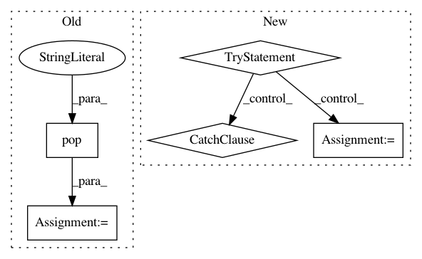

09fb46dc98b3da44293a8f387bc848e3055c1947,ggplot/geoms/geom_path.py,geom_path,draw,#Any#Any#Any#,23
Before Change
@staticmethod
def draw(pinfo, scales, ax, **kwargs):
x = pinfo.pop("x")
y = pinfo.pop("y")
pinfo["edgecolor"] = make_color_tuples(pinfo["edgecolor"],
pinfo["alpha"])
lines = [((x[i], y[i]), (x[i+1], y[i+1])) for i in range(len(x)-1)]
lines = LineCollection(lines,
edgecolor=pinfo["edgecolor"],
linewidths=pinfo["linewidth"],
linestyles=pinfo["linestyle"])
After Change
@staticmethod
def draw(pinfo, scales, ax, **kwargs):
try:
if kwargs["linejoin"] == "mitre":
kwargs["linejoin"] = "miter"
except KeyError:
pass
try:
if kwargs["lineend"] == "square":
kwargs["lineend"] = "projecting"
except KeyError:
In pattern: SUPERPATTERN
Frequency: 5
Non-data size: 5
Instances
Project Name: has2k1/plotnine
Commit Name: 09fb46dc98b3da44293a8f387bc848e3055c1947
Time: 2015-05-18
Author: has2k1@gmail.com
File Name: ggplot/geoms/geom_path.py
Class Name: geom_path
Method Name: draw
Project Name: stellargraph/stellargraph
Commit Name: c0025b8f1559d1ea25c06442c40e3eb3a38e39ab
Time: 2019-10-07
Author: andrew.docherty@data61.csiro.au
File Name: stellargraph/layer/graphsage.py
Class Name: GraphSAGE
Method Name: _get_sizes_from_keywords
Project Name: has2k1/plotnine
Commit Name: 14538c6714f45c0dbd6c95ff351c272c9cf85701
Time: 2014-04-29
Author: has2k1@gmail.com
File Name: ggplot/stats/stat_hline.py
Class Name: stat_hline
Method Name: _calculate
Project Name: prody/ProDy
Commit Name: c5b11b7668df61c3a5c3f927625430c56413d5fb
Time: 2012-11-14
Author: lordnapi@gmail.com
File Name: lib/prody/utilities/pathtools.py
Class Name:
Method Name: openFile
Project Name: has2k1/plotnine
Commit Name: 14538c6714f45c0dbd6c95ff351c272c9cf85701
Time: 2014-04-29
Author: has2k1@gmail.com
File Name: ggplot/stats/stat_vline.py
Class Name: stat_vline
Method Name: _calculate